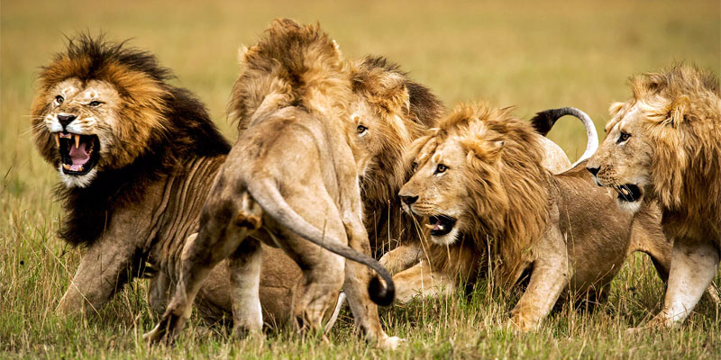
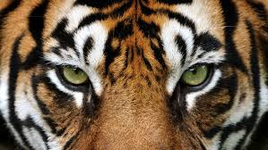
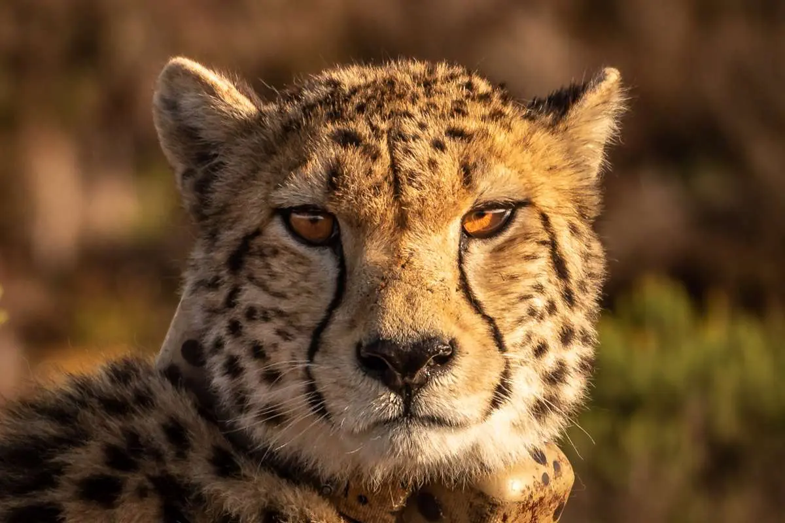

Aurora Dodaj
l'alunna Aurora Dodaj è nata a Genova il 24/06/09 pratica pallovolo da 8 anni e il suo animale preferito è il leone
La sua squadra del cuoreGiovanni Laganà
l'alunno Giovanni Laganà è nato a Genova 17/06/08 pratica boxe da 7 anni e il suo animale preferito è la tigre
Il ruggito del suo animale guida

l'alunna Greta Iellamo è nata a Genova 7/12/08 pratica danza classica da 12 anni e il suo animale preferito è il ghepardo
La sua musica classica preferita